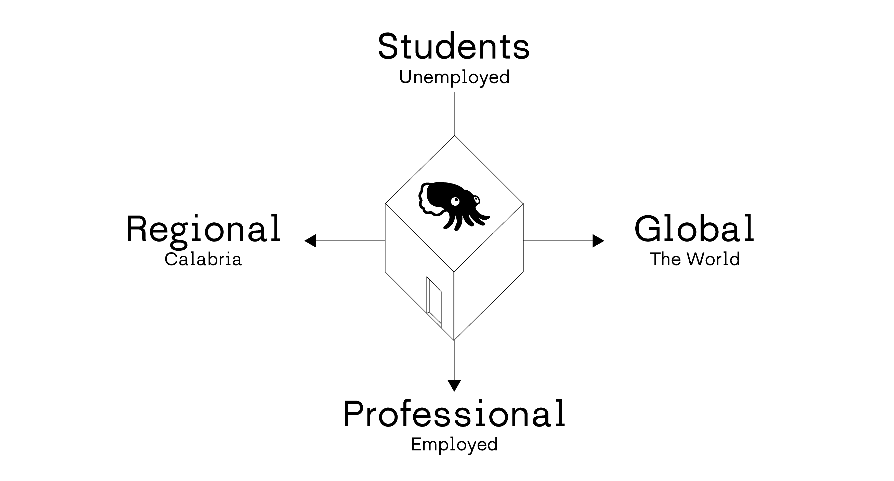
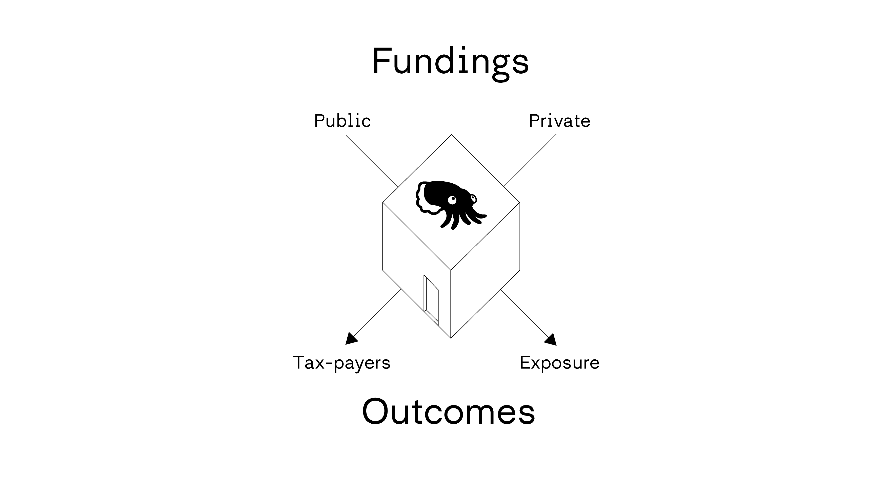
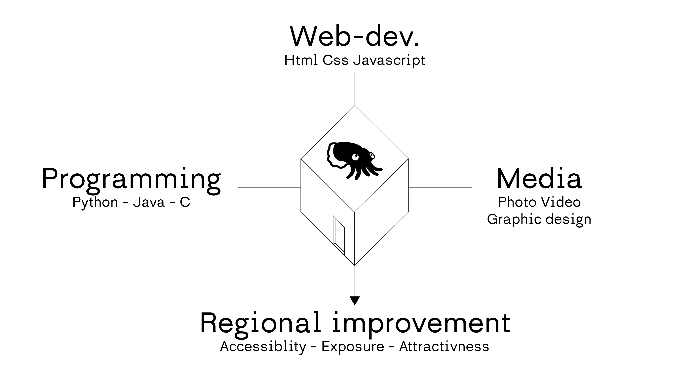
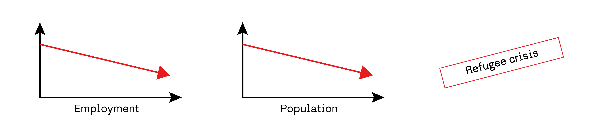
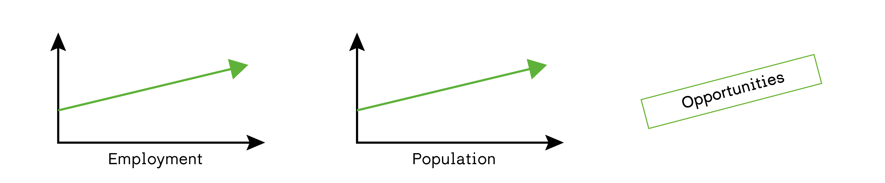
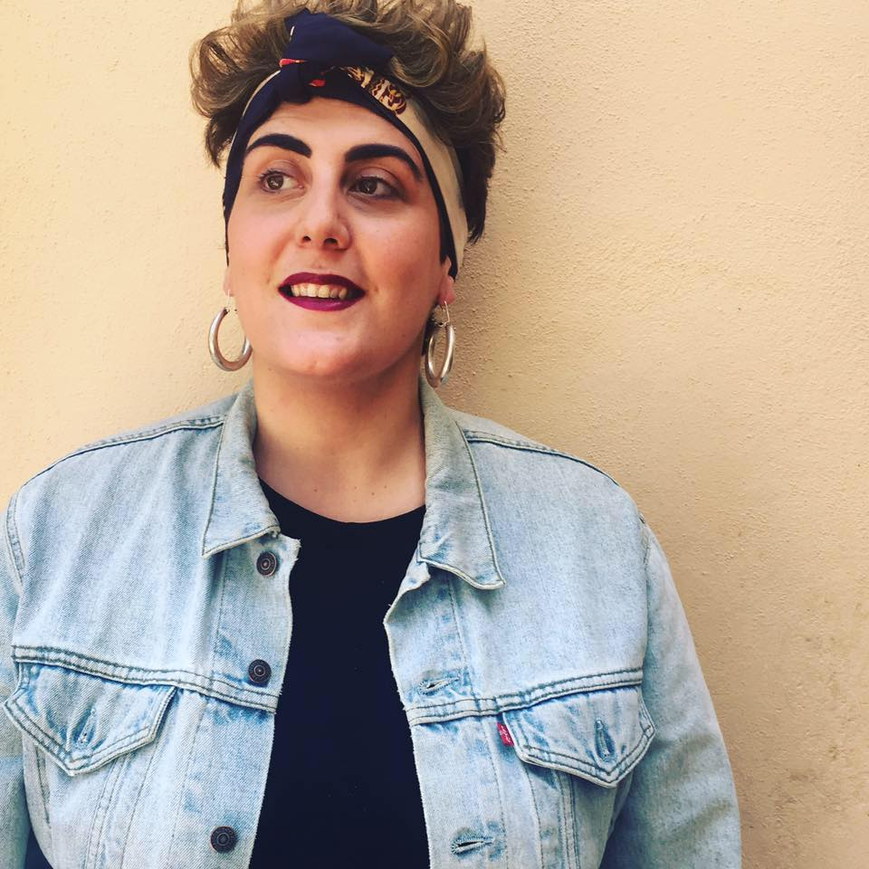
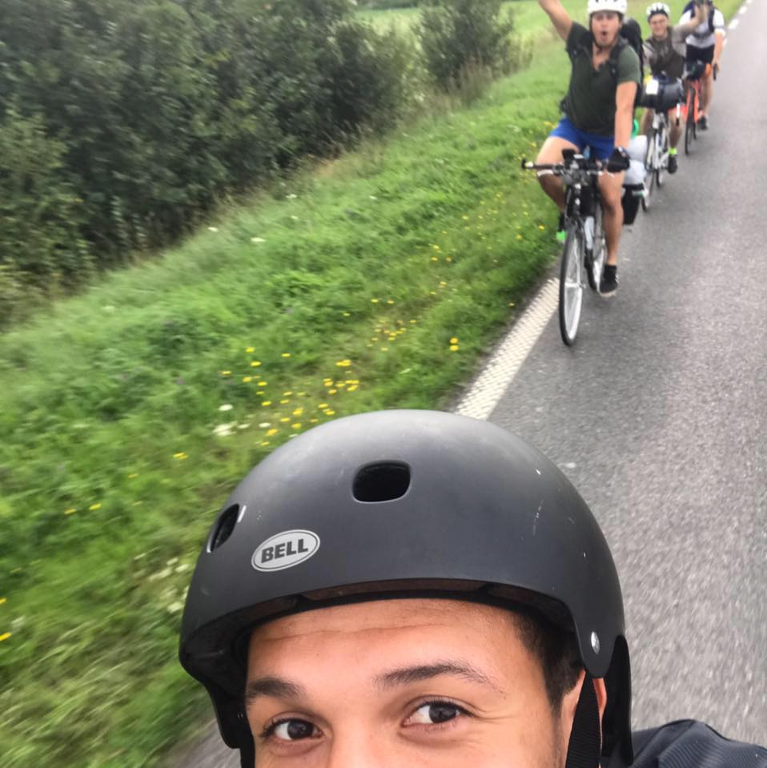
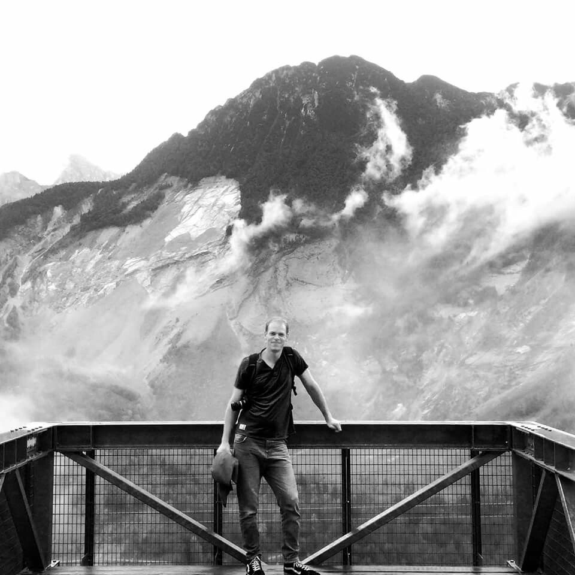
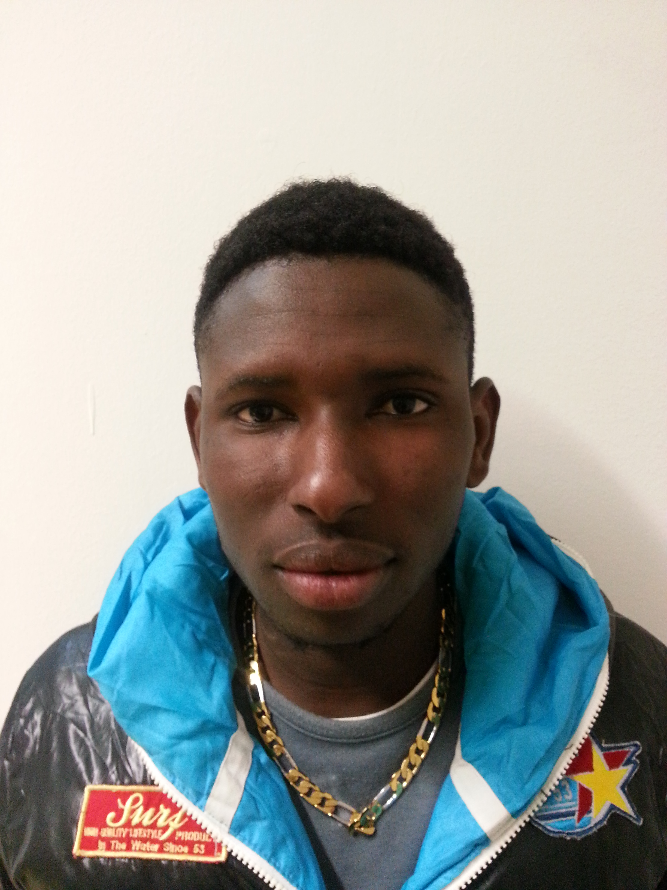
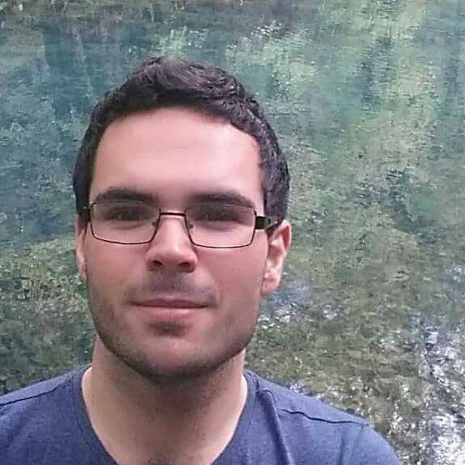

The Seppie Lab is a 48 m² space with ground floor access and shop front. It focuses on education and professionalisation of unemployed.
It is open to people from all ages, races and religions and promotes innovation and entrepreneurship.



The Seppie Lab is located in Amantea, Calabria, Italie.
Calabria is facing several difficulties at a time. First fighting the decline of rural areas.
Most of its youth as fled from the rural parts to neighbouring cities or to other European capitals. This phenomenon resulted in an ageing city now averaging 55 y/o. The reasons invoked are often based around the little job opportunities that the area as to offer and it's diminishing cultural life, among others. At the same time, it found itself at the center of the humanitarian crisis, bringing refugees by the thousands. People looking for safe environment where to start a new life, or share a part, for the least. Unfortunatly very little is being done to provide this new population with incentives to stay, which drives most of them to leave before they even got the results of their appeal for the refugee status.
"Italy is called upon to reconcile the difficult task of balancing the need to combat demographic decline, thanks to the arrival of migrants, with the need to create adeqaute spaces for their effective integration."
Dossier statistico - Immigrazione 2017 _ Centro Studi e Ricerche IDOS in partenaria con il Centro Studi Confronti.
There is now a chance to join common interest to revitalise rural Europe, if we just hand out the right tools for it to happen. We beleive that the lab will be the necessary bridge for a much needed transition of rural Europe in the 21st Century.



Project coordinator and PR
Exhibition curator _ Student RIBA Part II at The CASS
Project leader and Operator
RIBA Part III _ KADK Arkitekt MAA and Urbanist (Urbanism and Societal Changes)

Lead Operator - Intro C.S. and Media
RIBA Part I from London Metropolitan University

C.S. pogramme leader
Senior programmer and developper _ RIBA Part I
Graphic designer and Artistic director
MA Contemporary Typographic Media - UAL LCC _ RIBA Part I

Student CS
Web design - Social media student

Operator - Intro C.S.
M2 in Biology at University of Orléans
Le Seppie is a non-profit non-governmental association
Would you like to support the association ? You can do so here !
Would you like to know more ? contact us at: Larivoluzionedelleseppie@gmail.com ! Baccio !
Free of copyrights _ 2017 @ Florian Siegel